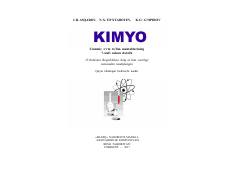

K77-sinf o‘quvchilari uchun kimyo fanidan asosiy darslik.
Ushbu darslik umumiy o‘rta ta’lim maktablarining 7-sinf o‘quvchilari uchun mo‘ljallangan bo‘lib, kimyo fanining asosiy tushunchalari va qonuniyatlarini qamrab oladi. Kitobda moddalarning xossalari, ularning o‘zgarishi va kimyo fanining rivojlanish tarixi haqida batafsil ma’lumotlar keltirilgan.